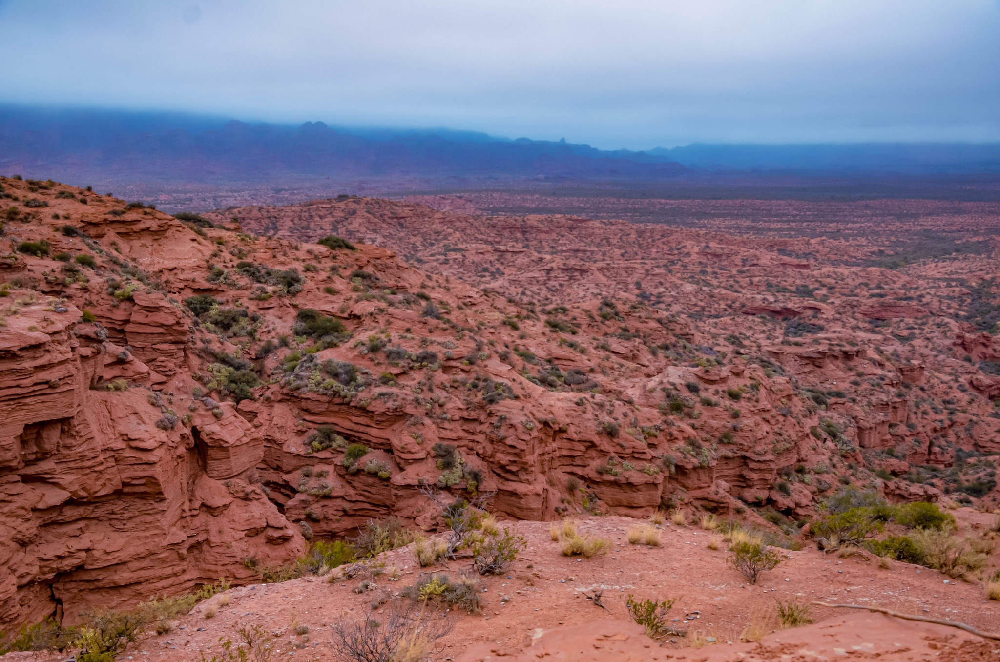

Destinos turísticos
Conoce los lugares mas lindos, descubri la magia de cada pueblo y ciudad
-
Sierras de las Quijadas

Magnífico y árido paisaje de serranías erosionadas por el agua y el viento que generan laberintos, farallones, barrancos y graderías de un color rojizo intenso, que se evidencia en todo su esplendor en el Potrero de la Aguada, gran anfiteatro natural en el corazón de la sierra.
-
San Francisco del monte de oro

Nacido en medio de un valle, surcado por ríos, y rodeado por las Sierras Centrales y las de Socoscora, este poblado cautivante invita a ser protagonista de aventuradas actividades en escenarios de inimaginable hermosura.
-
La Punta

Su historia es nueva, fundada en el año 2003, constituye la primer ciudad puntana nacida en el siglo XXI. Su ubicación en cercanías de San Luis Capital y altura sobre el nivel del mar, fueron el marco principal para poder organizar un Planetario, Observatorio, Set de Cine y Estadio de Futbol Juan Gilberto Funes.